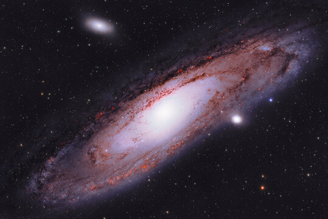
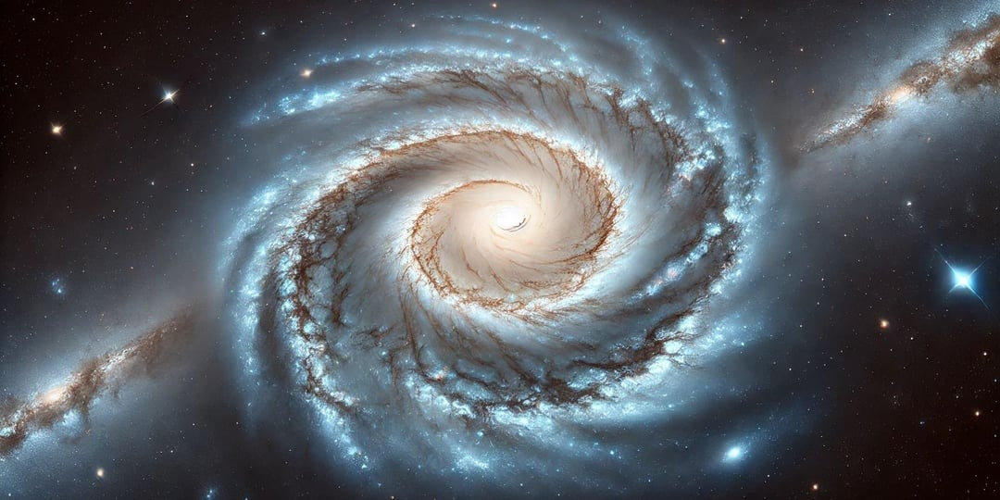
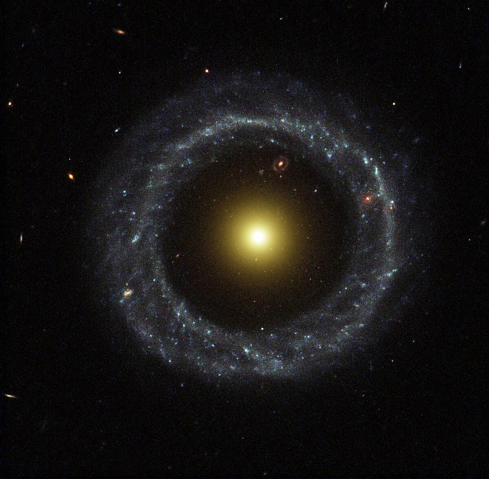

Галерея галактик

Галактика Андромеди:
- Найближча велика галактика до Молочного Шляху.
- Має приблизно 1 трильйон зірок.
- Очікується зіткнення з Молочним Шляхом через ~4 млрд років.
- Спіральна галактика з величезним центральним ядром.

Спіральна галактика:
- Має чітко виражені спіралі з мільярдами зірок.
- Часто виникає з об’єднання менших галактик.
- Центр складається з щільного зоряного ядра.
- Поширена форма галактик у Всесвіті.

Еліптична галактика:
- Має округлу форму і менше газу для народження нових зірок.
- Старі зорі складають більшість світла.
- Велика кількість темної матерії у центрі.
- Менш яскраві, ніж спіральні галактики.